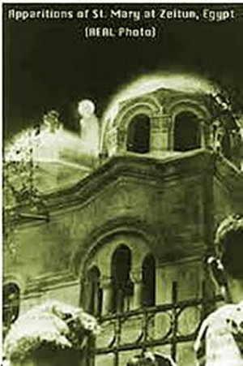
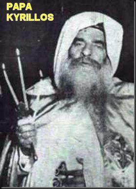
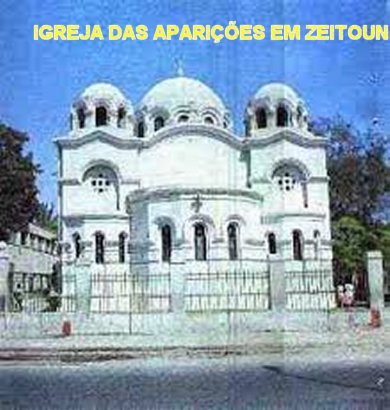
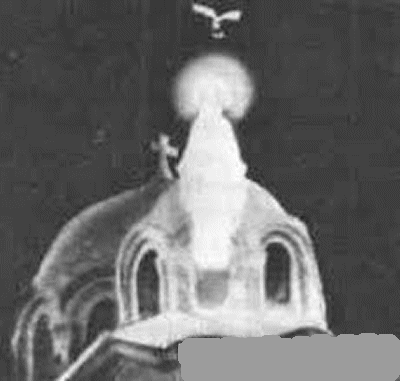
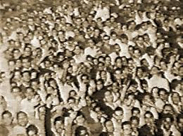
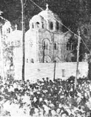
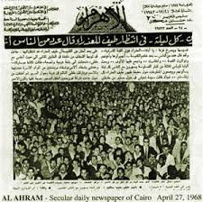

“AS MARAVILHOSAS APARIÇÕES”
A PRIMEIRA APARIÇÃO EM ZEITOUN
No ano
de 1968, exatamente defronte a Igreja Copta Ortodoxa, do outro lado da praça,
havia uma Oficina Garagem de Auto-Carros dos Transportes Públicos do Cairo, 
A atenção dos funcionários da Empresa de Transporte Urbano foi atraída pelos ruídos do povo na rua, e então, abriram os portões e observaram o que estava acontecendo, vendo aquela realidade. Foram eles: Farouk Mohammed Atwa (condutor); Hussein Awward (mecânico); Abed-el-Aziz Ali (guarda); Mahmoun Afifi (condutor) e Yacout Ali (Auxiliar), todos muçulmanos, relataram em pormenores o que observaram. Uns imaginaram que pelo fato dela estar encima da Cúpula, uma forma arredondada, poderia escorregar e cair lá de cima, por isso gritaram: “Cuidado, espere ai. Nós podemos ajudar”. Um deles receando ser uma tentativa de suicídio, telefonou para a polícia. Um outro bateu à porta da Igreja; era Adel Youssef Ibraim de 18 anos, filho do Padre Youssef Ibraim, um dos sacerdotes da Paróquia (Os Sacerdotes Ortodoxos Copta, de acordo com sua Ordem Religiosa, são dispensados do Celibato). Logo sabendo da notícia, o pai junto com o filho, com imenso sorriso de satisfação, apreciaram a Aparição; e logo em seguida o Padre comunicou o fato ao seu Superior Padre Constantino Moussa, aquele surpreendente e admirável acontecimento. Enquanto isso, a multidão foi crescendo a medida que entardecia, aumentando de modo notável, tornando-se incalculável; o trânsito na rua foi interditado. Nessa noite, a SANTÍSSIMA VIRGEM MARIA apareceu mais de uma vez, e o povo delirava de alegria... Os pedidos eram feitos no silêncio do coração e muitos, em voz alta, aos gritos. NOSSA SENHORA sempre bondosa e tranquila, no silêncio, sem palavras ELA sorria, benzia o povo e fazia incalculáveis milagres. O Padre Constantino, Superior da Comunidade Religiosa, apareceu ligeiro no meio do povo, e sorrindo, com imensa felicidade, ali mesmo rezou agradecendo a MÃE DE DEUS dizendo: “Louvado seja o SENHOR DEUS”.
No outro lado da praça morava o senhor Miguel Soliman e sua família, que emocionado, amparando sua esposa e protegido pelos seu filhos, se aproximou e conseguiu atravessar parte da multidão até onde lhe foi possível, e permaneceu com a família naquele local apreciando a VIRGEM MARIA, oportunidade em que ele mesmo classificou o acontecimento de maravilhoso, e ali permaneceu contritamente rezando por longo tempo.
No dia 9 de Abril, a SANTÍSSIMA VIRGEM MARIA apareceu outra vez ao povo, assim que o sol se ocultou. O senhor Miguel Soliman informou a Comissão Oficial: “Tanto as religiosas de uma Escola vizinha a minha propriedade, como o meu filho mais velho, que é estudante de Engenharia Civil viram a SANTÍSSIMA MÃE DE DEUS. Eu estava em casa, quando soube que estavam lá ao lado da Igreja; então corri para a Praça e tive a alegria e o imenso prazer de também ver a VIRGEM MARIA. ELA não se encontrava de pé encima de uma das cúpulas, mas dentro e pelo vitral da cúpula, como se fosse uma janela; e assim, nesse dia, apareceu-nos com a metade do corpo, da cintura para cima. Estava séria, mas com um rosto sereno e uma face bem agradável”.
As religiosas mencionadas pelo senhor Miguel Soliman, eram as Freiras do SAGRADO CORAÇÃO DE JESUS, que tinham uma Casa de Formação naquela região, e tiveram a oportunidade de assistirem diversas Aparições da VIRGEM SANTÍSSIMA. E por isso também, na primeira oportunidade escreveram um minucioso relatório sobre as Aparições e enviaram ao Vaticano. O Papa Paulo VI imediatamente mandou um funcionário verificar e testemunhar os fatos. O emissário chegou no dia 28 de Abril e logo pode apreciar as Aparições de NOSSA SENHORA. Então, retornou ao Vaticano e entregou o seu relatório ao Papa. Apenas por uma questão “administrativa”,porque as Aparições estavam ocorrendo numa Igreja Copta, e portanto numa área e setor do Papa Kyrillos VI, Patriarca de Alexandria, o Vaticano dignamente se afastou, mantendo o natural e devido respeito e consideração.

ATUAÇÃO DO PATRIARCA KYRILLOS
Imediatamente o Papa Kyrillos VI nomeou um Comitê de altos Sacerdotes e Bispos, para pesquisar profundamente todos os fenômenos. A Delegação era constituída pelo Padre Guirguis Matta, Diretor Geral do Oficio Papal; Padre Hanna Abd-el-Messih, deputado, membro da Comissão de Negócios Eclesiásticos; Padre Benjamim Kamel, Secretário Particular do Papa. Após um estudo profundo, envolvendo pesquisas, depoimentos e verificações, fizeram um primeiro relato. Foi um trabalho intenso e de grande valor, que envolveu muitas pessoas nos diversos departamentos religiosos e em várias áreas da administração Municipal. Então havia muito trabalho para ser bem esquematizado, e assim entregaram um esquema inicial ao Papa Kyrillos. O Papa Kyrillos VI, Patriarca da Alexandria, desde o inicio revelou-se satisfeito com o trabalho realizado pelas diversas comissões que se empenharam dignamente em busca da completa e perfeita verdade. Carinhosamente acolheu todos os documentos. E continuou com suas observações e pesquisas.
RELATÓRIO DO GOVERNO EGÍPCIO
O Diretor de Informações e Censuras do Egito, submeteu ao senhor Ministro do Turismo, Hafez Ghanem, um relatório também super pormenorizado, confirmando o testemunho dos empregados da Oficina Garagem de Auto-Carros dos Transportes Públicos do Cairo, e uma quantidade incontável de depoimentos de pessoas e comerciantes instalados na redondeza, atestando como verdadeiras, as Aparições da SANTÍSSIMA VIRGEM MARIA encima da Igreja.
OUTRAS AUTORIDADES
O Cardeal Stephanos, patriarca dos Coptas Católicos, e o Arquimandrita Airut, da Igreja Católica Grega, procurados no âmbito desse interrogatório governamental, deram a sua confirmação acerca das Aparições Miraculosas da SANTÍSSIMA VIRGEM MARIA. O Cardeal Stephanos acrescentou: “Que esses milagres representam uma benévola mensagem de paz e amor, que atrairá peregrinos de todo o mundo em direção à Igreja de Zeitoun”.

TESTEMUNHOS MUÇULMANOS
Foram colecionados numerosos testemunhos de personalidades muçulmanas, que felizes com o acontecimento fizeram questão de corroborar com seus relatos. Entre muitos, podemos citar: Mahmoud Abd-el-Rahman, jornalista do periódico El Masaa; Hamdy Hiraz, deputado de Zeitoun na Assembléia Nacional; Mahmoud Naguib, correspondente do Jornal Al Gomhoreya; Mohamed Hassan, da Sociedade Oftalmológica Nagi; Mustafá Mohamed El-Kabbani, guarda-livros no Instituto do Petróleo; Mohamed Raafat Mahmoud, chefe de contabilidade. Todos afirmaram a mesma realidade que as outras pessoas haviam declarado anteriormente: “Que a VIRGEM MARIA permaneceu silenciosa, as vezes séria, outras vezes sorrindo. Cumprimentava o público fazendo reverência com a cabeça. O SEU deslocamento de um local para o outro, era como se deslizasse. Uma auréola branca sempre apareceu ao redor da SUA Face, dando-lhe um ar mais majestoso e sereno. Em certas ocasiões, apareceu com um coroa , assim como em diversas oportunidades ELA trouxe o MENINO JESUS nos braços. NOSSA SENHORA também apareceu uma vez acompanhada de SÃO JOSÉ e do MENINO JESUS, tendo JESUS um aspecto de aproximadamente 12 anos de idade”.
SINAIS PRECURSORES DA CHEGADA DA VIRGEM

Outro fato admirável que acontecia com a chegada da SANTÍSSIMA VIRGEM MARIA, era que em certas ocasiões surgiam torrentes de incenso que se espalhava por toda Igreja e também, alcançava o povo do lado de fora. Era um perfume admirável, com uma fragrância extraordinária, que agradava a todos. Também variava muito o tempo de visita da MÃE DE DEUS. As vezes permanecia por poucos minutos durante as Aparições, fazendo milagres, abençoando e cumprimentando o povo. Entretanto haviam dias que NOSSA SENHORA permaneceu muitas horas, desde o entardecer de um dia até o amanhecer do dia seguinte.
Assim, como NOSSA SENHORA só aparecia ao anoitecer, e em muitas oportunidades permanecia até as 3 ou 4 horas da manhã do dia seguinte, esta realidade fez o povo daquele Distrito de Zeitoun passar a dormir pela manhã, a fim de estar bem acordado a noite, para ver e rezar com a VIRGEM MARIA MÃE DE DEUS.
AS AVES
Outro fato curioso era o aparecimento de “Aves”, durante as Aparições; Elas tinham o aspecto de Pombas, mas davam a impressão de serem bem maiores, com um lindo branco luminoso em todo o corpo. Essas Aves surgiam e as vezes atravessavam o espaço visual na horizontal, em dupla ou formando uma cruz. Outras vezes utilizava o sentido transversal. Mas sempre rápidas. Em poucos segundos cobriam o espaço visual. A quantidade era pequena, de 4 a 6 aves. Elas não batiam as azas, ou as vezes dava a impressão que batiam, mas de modo quase imperceptível. Entretanto, a bem da verdade, “aqueles pássaros pareciam que não movimentavam as asas” e que deslizavam no espaço, sem bater as asas.
AS MULTIDÕES QUE SE
FORMAVAM 
Durante todo o tempo das Aparições, multidões incontáveis e super animadas, se juntavam em torno da Igreja de SANTA MARIA DE ZEITOUN. No ano de 1968 foi calculada uma frequência humana durante o dia de 50.000 pessoas e a noite as vezes atingia 100.000 pessoas. A Administração Pública do Cairo, mandou fechar a rua, não permitindo o trânsito de automóveis em toda a área ao redor da Igreja. Mandou também transferir a Garagem da Empresa de Transporte Urbano para outro local, e também desativou alguns edifícios vizinhos, em razão da grande quantidade de pessoas que se juntavam para presenciarem as Aparições. Os edifícios desativados eram velhos e alguns abandonados. Foram demolidos e os locais utilizados para estacionamento de veículos dos fiéis visitantes.

O semanário religioso copta Watani foi o primeiro a publicar informações sobre as Aparições, em duas páginas semanais. A revista também publicou relatos semanais de alguns dos milagres e curas importantes que ocorriam com os peregrinos e testemunhas. Em pouco tempo, a mídia do mundo todo, inclusive o New York Times e as principais revistas noticiosas, publicavam artigos sobre os acontecimentos e muitas fotografias da SANTÍSSIMA VIRGEM MARIA durante as Aparições. Chegava a Zeitoun, gente de todo o mundo, em número cada vez maior, e muitas dessas pessoas viram e receberam bênçãos de NOSSA SENHORA.
CURAS MILAGROSAS

As Curas foram muitas, verdadeiramente incontáveis, de diversas e variadas modalidades. O Patriarca Kyrillos VI também instituiu desde o inicio uma Comissão Médica, orientada pelo Dr. Shafik Abd-el-Malek para estudar e relacionar as variadíssimas curas ocorridas. E verdadeiramente foram muitas mesmo, um resultado impressionante e surpreendente. É construtivo lembrar sempre, que a MÃE DE DEUS é MÃE de toda humanidade, e por isso mesmo, atendeu carinhosamente os nossos irmãos Ortodoxos e os Coptas, assim como a sincera religiosidade de todas as Nações.
Algumas das curas confirmadas por médicos incluíam as de câncer da bexiga, câncer da glândula tireóide, cegueira permanente, surdez, paralisia permanente de membros, hérnias, hipertensão, infecções bacteriológicas e virais e insanidade mental.
DECLARAÇÃO OFICIAL DO PAPA KYRILLOS
O Papa Kyrillos depois de apreciar todos os relatórios e documentos, declarou “a sua profunda fé nas Aparições da SANTÍSSIMA VIRGEM MARIA, MÃE DE DEUS, e na quantidade admirável e incontável de milagres ocorridos, inclusive as curas miraculosas de enfermidades desesperadas, assim como as bênçãos que acompanharam os milagres”. Depois rendeu ações de graças ao SENHOR DEUS, por haver autorizado a realização destes milagres admiráveis, na Igreja edificada no local onde esteve a SAGRADA FAMÍLIA por ocasião da fuga às perseguições de Herodes.